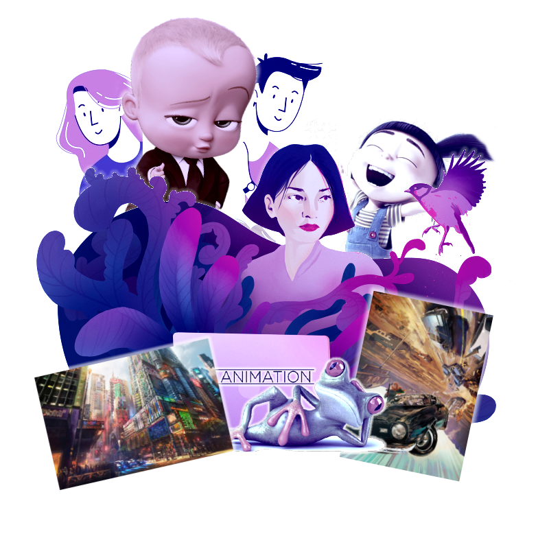

Apa itu 30D Talks?
#Berkarya30D
30DTalks adalah program webinar gratis yang dikhususkan bagi kamu yang ingin belajar atau meningkatkan kompetensi di bidang Digital Art (illustration, vector, concept art, character design, animation dll) dengan belajar langsung dari para ahli dan praktisi yang berpengalaman di bidangnya selama 30 hari!
Tertarik? Pendaftaran akan di buka pada tanggal 15 Juli 2020 dan ikuti #30DChallenge!